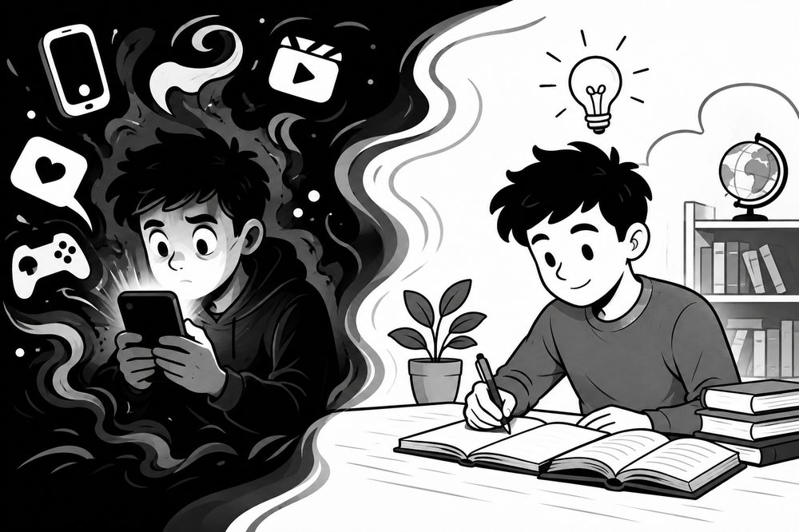

Why Nothing Feels Interesting Anymore: The Science Behind Lost Curiosity
Have you opened a book, started reading, and lost interest within minutes? Or sat down to learn something new, only to find yourself scrolling instead? Most people assume they've become lazy, unmotivated, or "just not curious anymore." Neuroscience suggests something different: curiosity isn't gone. It's been hijacked.

Curiosity is still working
Every time you refresh Instagram, watch another short video, or scroll through your feed, your brain is doing exactly what it was designed to do — searching for new information. Curiosity is the brain's natural drive to fill gaps in knowledge. Whenever it encounters something surprising or unfamiliar, it pushes you to learn more. That's the same system that fuels scientists making discoveries, artists creating work, and entrepreneurs building companies.
The difference isn't that they have more curiosity than you. The difference is where their curiosity is pointed.
The dopamine connection
At the center of curiosity is dopamine. Contrary to popular belief, dopamine isn't simply the "pleasure chemical" — it's the chemical that motivates action. It's what makes you want to explore, learn, and pursue something rewarding.
When dopamine levels are healthy, books feel exciting, conversations feel meaningful, learning feels rewarding, and new ideas spark creativity. When dopamine becomes overstimulated, all of that changes.
How social media hijacks the system
Every notification, viral video, clickbait headline, or endless scroll gives the brain a small dopamine spike. Normally, dopamine rises and then returns to baseline. But algorithm-driven platforms trigger these spikes repeatedly — sometimes hundreds of times an hour.
Over time, the brain adapts. To protect itself, it becomes less sensitive to dopamine, dulling how strongly it responds to any single signal. The result:
- Reading starts to feel boring
- Studying becomes harder to sustain
- Hobbies lose their pull
- Deep conversations feel exhausting
Meanwhile, highly stimulating content keeps feeling rewarding, because it's still producing a big enough spike to register. That asymmetry is what creates a cycle that's hard to break out of on willpower alone.
Signs of dopamine overload
You can't focus
You sit down to work or read, and within minutes you're reaching for your phone — not because the task is hard, but because it isn't stimulating enough to compete.
You feel like you have nothing interesting to say
Despite hours of content consumed, very little of it sticks or feels worth bringing up later.
You feel like you've stopped growing
You remember a version of yourself that read books, picked up hobbies, and got genuinely absorbed in topics. Now most things feel flat by comparison.
The brain can recover
This state isn't permanent. A few practical changes can restore healthy dopamine sensitivity and, with it, the ability to feel genuinely interested in things again.
1. Reset your dopamine
Take a break — one to seven days — from your highest-stimulation activities: endless scrolling, binge-watching, short-form video, or gaming if that's your main source of stimulation. The goal isn't to quit the internet, it's to stop constantly re-triggering the spike.
2. Create friction
Make distracting habits harder to reach for automatically:
- Turn off notifications
- Keep your phone in another room while working
- Delete distracting apps temporarily
- Use social media on desktop only, if you must use it at all
Small inconveniences cut down impulsive scrolling more effectively than willpower does.
3. Move your body
Exercise is one of the most effective ways to support a healthy dopamine system. Regular physical activity improves both dopamine production and how sensitively the brain responds to it, which makes ordinary activities feel naturally more rewarding again. Even a 30-minute walk a day makes a measurable difference.
4. Go deep instead of wide
Instead of consuming dozens of short videos, pick one topic that genuinely interests you and spend 20 focused minutes on it. Read an article properly. Watch something long-form. Ask follow-up questions. Follow the thread wherever it leads. Depth, not volume, is what rebuilds real interest.
Curiosity isn't lost — it's waiting
Most people who feel this way aren't lazy or boring. Their brains have simply adapted to constant digital stimulation, and adaptation can run in both directions. Reduce the overstimulation, move your body, and deliberately go deep on something that matters to you, and curiosity tends to come back on its own.
Being interested in the world is what ultimately makes you interesting.
Bottom line
Attention is one of the most valuable resources anyone has, and every swipe, click, and notification shapes how the brain responds to everything else. Trading endless scrolling for deeper, slower engagement doesn't just improve focus — it's how curiosity, creativity, and the drive to keep learning actually come back.
← Back to the blog